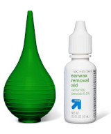
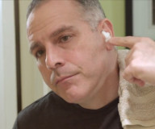
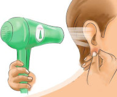

|  | Ear Wax Cleaning Kits are found in most pharmacies. No prescription needed. |
|
Use the wax-softening agent twice daily for up to 4 days. Do NOT use wax-softening if:
|
|
|  | Use cotton balls to keep the softening agent from dripping out. |
| Spray warm water gently into the ear. | |
|  | Dry ears after rinsing. or Place 1-2 drops of vinegar into the ear. |